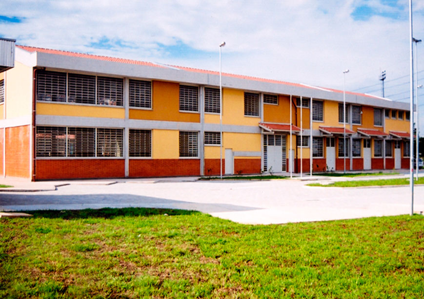

Fatec Zona Sul · DSM
Tecnologia para transformar ideias em soluções
O curso de Desenvolvimento de Software Multiplataforma prepara profissionais para criar aplicações web, mobile e sistemas de software.
Aprenda fazendo
Durante a formação, os alunos estudam programação, banco de dados, desenvolvimento web, engenharia de software e outras tecnologias utilizadas no mercado. Projetos práticos ajudam a compreender as etapas de desenvolvimento e a criar soluções para diferentes necessidades.
